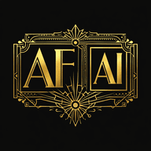

Direction 1a at full fidelity: the actual paper texture, Playwrite NZ masthead, Georgia body, antique-gold active nav and slate-blue links — straight from variables.css. Desktop pages plus mobile. This is close to what the shipped site would look like.

This version of the site started as an AI experiment — could I build a website using only AI prompts? All experiments must end, but I consider this one a success.
After breaking my arm, typing got a lot harder — so I went looking for a one-handed layout.
A month ago, after breaking my arm, I suddenly found typing a lot more difficult — so I went scouring the Internet for a one-handed keyboard layout.
Read more →More notes on matters technical, written as the experiment continued.
Read more →Welcome to my blog, where I'll be posting discussions of matters technical — hopefully without too many tangents.
Read more →BS, Computer Science
Unsupervised Learning, Recommenders & RL — 2026
Advanced Learning Algorithms — 2025
Supervised ML: Regression & Classification — 2025
Building Microservices API in Go — 2025
Programming with Google Go — 2025
Ultimate Rust 2: Intermediate Concepts — 2024
Every AI prompt used to build this site, in the order it was sent — a record of the experiment.
Create a starter website using Python for the back end and Lit with Shoelace for the front end…
Add a PROMPTS.md file listing each prompt for this session.
Replace the header font with "Playwrite New Zealand Basic".
Try next: "tighten the masthead — smaller name, more space" · "add a dark-academia reversed section to the Home page" · "render direction 1c or 1d in hi-fi too" · "export the hi-fi Home as a standalone page"
The full page set at phone width. The masthead collapses to a hamburger that opens a full-screen nav drawer (3a); every page keeps the single reading column and adds a current-page label for context. Same components, narrower frame.
Try next: "render the mobile pages in hi-fi with the parchment palette" · "show the tablet breakpoint too" · "take another direction (1c/1d) to mobile"
Direction 1a applied across the whole site. The shared centered masthead + nav (one site-header component) tops every page; each page is a single reading column rendered by markdown-card / blog-card. Copy is pulled from the repo.
The shared masthead at three widths — the one site-header component every page reuses.
Try next: "render 2a–2e in hi-fi with the real parchment palette" · "add full mobile versions of these pages" · "expand another direction (1b/1c/1d/1e) into full pages"
Five distinct structural directions, all evolving the parchment / aged-paper vibe and built from the same shared web components (site-header, markdown-card, blog-card). Each shows the Home layout plus thumbnails of how Blog · Education · Prompts inherit the system. Reference any option by its id in chat.
Centered masthead, one calm reading column. A refinement of today's site — lowest risk, maximum legibility.
A persistent left rail holds the brand and nav; the right pane is a wide, quiet reading surface. Library / study feel.
Big masthead rule, content set like a journal: dates and labels live in a narrow left margin, prose to the right. Indexed, archival.
Every section is a tile. Home becomes a hub you scan at a glance; Blog and Prompts render as responsive card grids. Most modular.
Leans all the way into the site's origin story — "built entirely from AI prompts." Monospace, command-line framing, content as a running log. Most distinctive.
Try next: "expand 1a into full per-page wireframes" · "blend the nav from one option into another" · "show the mobile layout for an option" · "new directions for just the Blog"